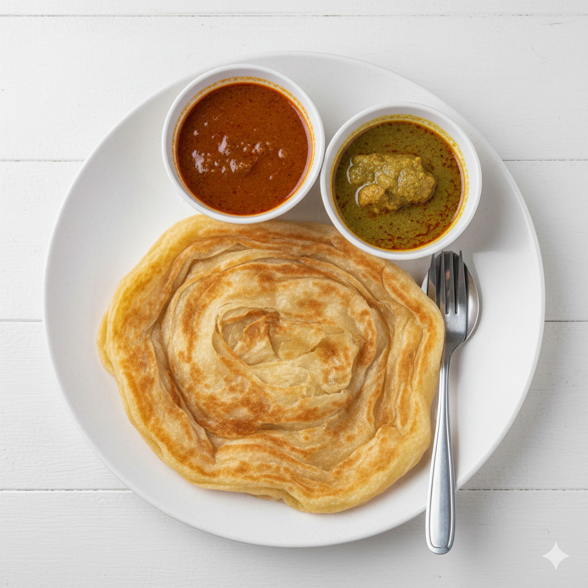

ROTI CANAI
Roti canai has always been my family’s go-to meal whenever money was tight, and because of that, it holds a very special place in my heart. It wasn’t just about being affordable, but about how it brought all of us together at the same table, sharing plates of warm, flaky roti with dhal or curry. Some of my fondest memories are sitting with my family, tearing pieces of roti with my hands while watching my favourite cartoons on TV, completely absorbed and content. Those simple moments of eating, laughing, and being together made roti canai more than just food, it became a symbol of comfort, bonding, and home for me.